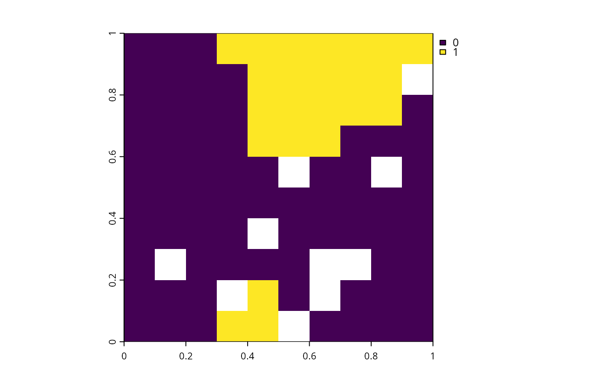

Add constant robust constraints
Source:R/add_constant_robust_constraints.R
add_constant_robust_constraints.RdAdd robust constraints to a conservation problem to specify that the solution should ideally aim for the same level of robustness for each feature group.
Arguments
- x
prioritizr::problem()object.- groups
charactervector indicating which features should be grouped together for the purposes of characterizing uncertainty. In particular,groupsis used to specify a group name for each feature and features with the same group name will be grouped together. For example, if some of the features correspond to alternative predictions for the same species under different scenarios, then these features should have the same group name.- conf_level
numericvalue describing the level of robustness required for the solution (ranging between 0 and 1). Defaults to 1, corresponding to a maximally robust solution. See the Details section for more information on this parameter.
Value
An updated prioritizr::problem() object with the constraint added
to it.
Details
The robust constraints are used to generate solutions that are robust to
uncertainty. In particular, conf_level controls how
important it is for a solution to be robust to uncertainty.
To help explain how these constraints operate, we will consider
the minimum set formulation of the reserve selection problem
(per prioritizr::add_min_set_objective().
If conf_level = 1, then the solution must be maximally robust to
uncertainty and this means that the solution must meet all of the targets
for the features associated with each feature group.
Although such a solution would be highly robust to uncertainty,
it may not be especially useful because this it might have
especially high costs (in other words, setting a high conf_level
may result in a solution with a poor objective value).
By lowering conf_level, this means that the solution must only meet
certain percentage of the targets associated with each feature group.
For example, if conf_level = 0.95, then the solution must meet, at least,
95% of the targets for the features associated with each feature group.
Alternatively, if conf_level = 0.5, then the solution must meet, at least,
half of the targets for the features associated with each feature group.
Finally, if conf_level = 0, then the solution does not need
to meet any of the targets for the features associated with each
feature group. As such, it is not recommended to use conf_level = 0.
Data requirements
The robust constraints require that you have multiple alternative
realizations for each biodiversity element of interest (e.g.,
species, ecosystems, ecosystem services). For example, we might have 5
species of interest. By applying different spatial modeling techniques,
we might have 10 different models for each of the 5 different species
We can use these models to generate 10 alternative realizations
for each of the 5 species (yielding 50 alternative realizations in total).
To use these data, we would input these 50 alternative realizations
as 50 features when initializing a conservation planning problem
(i.e., prioritizr::problem()) and then use this function to specify which
of the of the features correspond to the same species (based on the feature
groupings parameter).
See also
See robust_constraints for an overview of all functions for adding robust constraints.
Other functions for adding robust constraints:
add_variable_robust_constraints()
Examples
# \dontrun{
# Load packages
library(prioritizr)
library(terra)
#> terra 1.8.70
# Get planning unit data
pu <- get_sim_pu_raster()
# Get feature data
features <- get_sim_features()
# Define the feature groups,
# Here, we will assign the first 2 features to the group A, and
# the remaining features to the group B
groups <- c(rep("A", 2), rep("B", nlyr(features) - 2))
# Build problem
p <-
problem(pu, features) |>
add_robust_min_set_objective() |>
add_constant_robust_constraints(groups = groups, conf_level = 0.9) |>
add_relative_targets(0.1) |>
add_binary_decisions() |>
add_default_solver(verbose = FALSE)
# Solve the problem
soln <- solve(p)
# Plot the solution
plot(soln)

# }